韩国延世大学
Yonsei University
延世大学成立于1885年，源自韩国第一所现代医疗机构"广惠院"，与首尔大学、高丽大学并称韩国SKY三大名校，QS2027世界排名第42位。学校设首尔新村、仁川国际、原州未来三个校区，31个本科学院、23个研究生院，在校生41717名（国际学生6713名），累计…
学费参考：报名费 13 万韩元；入学金 119.5 万韩元；学费 1200 万
查看院校介绍 →
按办学性质分为公办（国立）、教会、私立三类，并附权威排名与资质标签；院校按综合实力排序。所有信息参考，以校方最新简章为准。
延世大学成立于1885年，源自韩国第一所现代医疗机构"广惠院"，与首尔大学、高丽大学并称韩国SKY三大名校，QS2027世界排名第42位。学校设首尔新村、仁川国际、原州未来三个校区，31个本科学院、23个研究生院，在校生41717名（国际学生6713名），累计…

庆北国立大学是韩国大邱的国立大学，与全北大学、庆尚国立大学同属地方重点国立序列。学校起源可追溯至1923年成立的医学院，1946年9月正式设立，现设19个学院与14个研究生院（含医学、牙科、兽医等专业研究生院），代表庆尚北道（大邱曾为道府）。学校以国立院校的学…
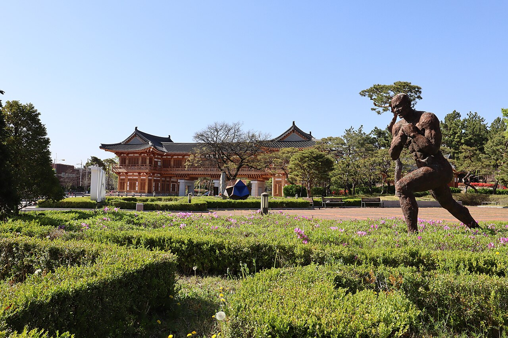
全北大学1947年建校，位于全罗北道全州市，是韩国国立重点综合性大学，设本科生院、研究生院及专门/职业研究生院，学科覆盖农业与生命科学、工程、医学、牙科、兽医、护理等。学校为国际学生提供多语种论文指导，部分专业可用中文完成毕业论文（如汉语言文学需TOPIK5级…
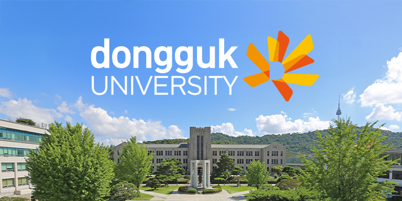
东国大学1906年建校，是韩国历史悠久的私立综合性大学，具有佛教文化传统，主校区位于首尔中区南山脚下，另设高阳、庆州WISE及洛杉矶校区。学校以电影与数字媒体、表演艺术、社会科学见长，2026年QS世界排名约618位。近年来面向中国学生开设中文授课专升本与硕士…

建国大学建校年份官方2027简章标注为1931年，另有资料从1946年"朝鲜政治学馆"起算、1959年改称建国大学。学校主校区位于首尔广津区，与地铁2号线、7号线换乘站相接，校内有一鉴湖；另设忠州GLOCAL校区。人文、社会、自然科学、工学、艺术体育等学科集中…
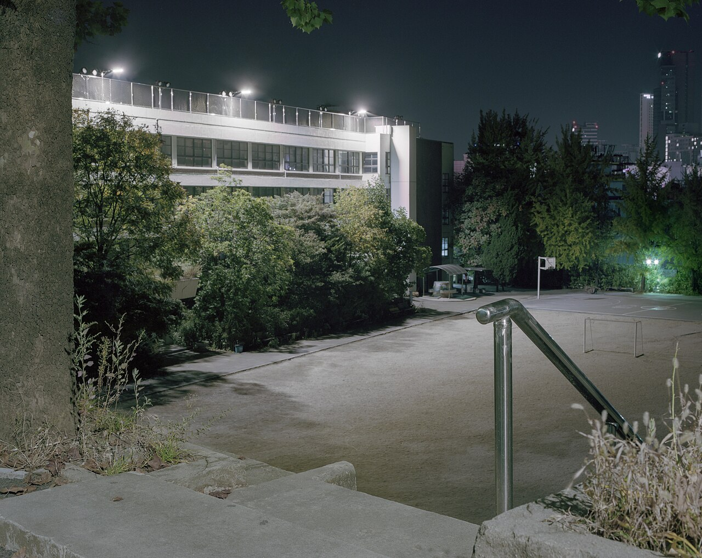
弘益大学1946年建校，主校区位于首尔麻浦区，另设世宗分校，是韩国私立综合性大学，以美术与设计、建筑与城市规划闻名，2026年QS艺术设计排名位列前50。学校艺术设计类专业的中文授课硕士项目（国际经营、设计管理）对作品集要求较高，学费相对亲民，适合有艺术设计背…

岭南大学前身大邱学院（1947）与中央学院（1950），1967年由朴正熙总统合并创办，1972年庆山新校区启用。学校是BK21PLUS重点建设高校，校园占地4600多亩，为全韩最大单一校园，计算机与数学学科连续11年排名全韩第一，产业界大学评价连续14年获评…
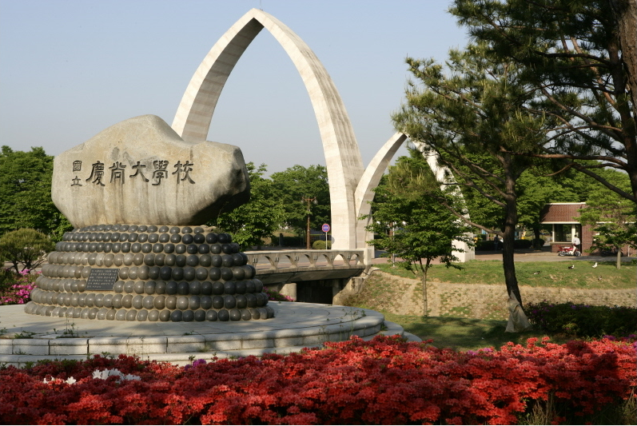
庆尚国立大学1948年建校，是韩国重点公立大学、十大国立大学之一，素有"庆尚南道第一学府"之称，设加佐、七岩、统营、昌原四个校区，总占地165余万平方米，在校生约2.4万人。学校在应用生命科学、农业科学、兽医学等领域实力突出，面向国际学生提供韩语及英文授课硕博…

顺天乡大学1978年建校，前身为医科大学，位于忠清南道牙山市，是韩国知名综合私立大学、中国教育部涉外监管网备案高校。学校设10个学院、54个本科专业，在首尔、富川、天安、龟尾拥有4所直属附属医院，医学学科实力突出，THE世界大学影响力全球第100位、健康与福祉…
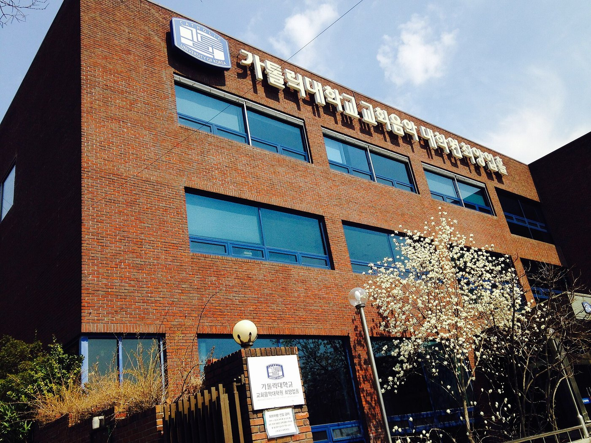
大邱加图立大学始建于1914年，是岭南地区办学历史悠久、规模最大的综合性研究型大学，韩国规模最大的加图立系大学。学校设17个学院、70个本科专业，同时入选LINC、ACE、教育力量强化事业三项国家级项目（全韩仅15所）。4ICU韩国国内排名第21位，医学专业韩…
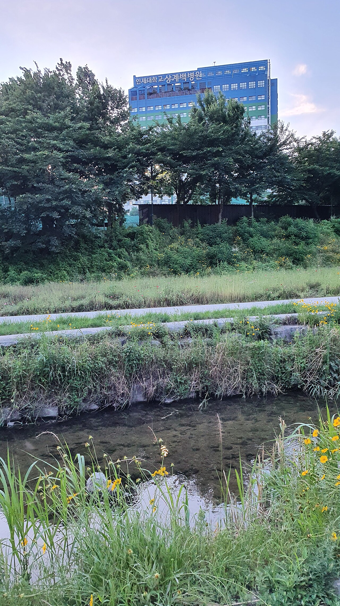
仁济大学1979年建校（前身始于1941年），主校区位于庆尚南道金海市，另设釜山校区，是韩国私立综合性大学，以医学、护理、牙科等医疗保健学科见长，附属医院资源丰厚。本次合作范围按原清单限定为硕士护理专业。学校护理学科在韩国具有较高声誉，适合有护理专业背景、希望…
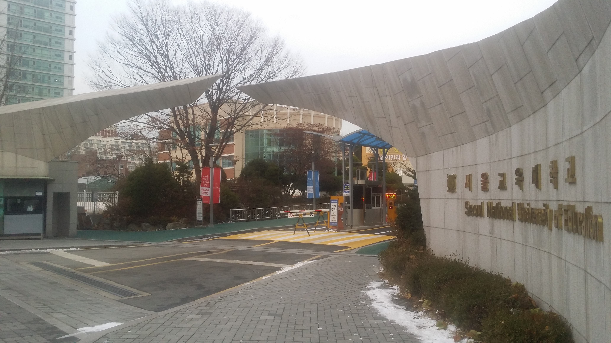
首尔教育大学1946年建校，位于首尔特别市瑞草区，是韩国国立师范类高校，以培养小学教师为核心使命。学校设有初等教育本科及教育研究生院，长期承担首尔地区小学师资培养与在职教师研修职能，在韩国初等教育领域享有较高声誉。作为国立院校，学费相对低廉，但专业高度集中于小…

东亚大学位于釜山广域市，是私立综合性大学，机构资料多记为1946年建校。学校设乘鹤、富民、九德三个校区，11个学院/58个专业，约350所院校的全球合作网络，来自40多个国家的留学生。乘鹤校区集中工科、设计、艺术体育、健康科学、软件等学科；富民校区设社会科学、…
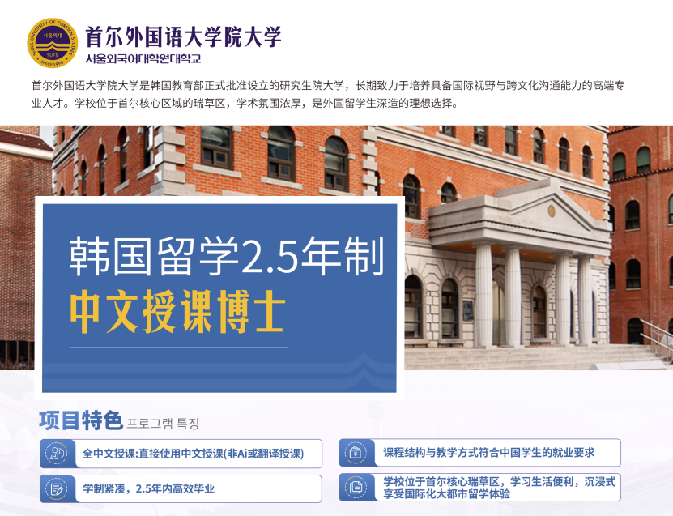
首尔外国语大学院大学2003年建校，是韩国教育部正式审批设立的专职研究生院大学，坐落于首尔瑞草区江南核心板块，属中国教育部涉外监管信息网公示备案院校。学校专注硕博层次人才培养，聚焦国际教育、法学、国际经营等方向，长期面向中国市场打造适配在职学习者的中文授课项目…

首尔科学综合大学院大学（aSSIST）前身为1995年创立的韩国产业政策研究院（IPS），2004年获韩国教育部批准设立，是韩国首家以经管教育为核心、获批人工智能大学院的专职研究生院大学。学校入选WURI世界创新大学榜单，被Aspen基金会认定为全球一流商学院…

京畿大学1947年建校，设水原与首尔两个校区，是韩国私立综合性大学，以旅游、酒店管理、艺术与设计、商科、国际研究等学科见长。学校面向中国学生开设中韩双语授课硕博项目，入学门槛为TOPIK3级或完成学校中国事务中心100课时基础韩语培训并考核合格；毕业论文可用中…

白石大学办学渊源可追溯至1976年白石学园创立，1994年正式设立四年制大学，2006年由天安大学更名为白石大学（中文招生渠道通用口径为"创建于1983年"）。学校现有在校生约3万人（研究生近万名），12个本科学院、7个硕博研究生院，与全球100多所大学签订交…
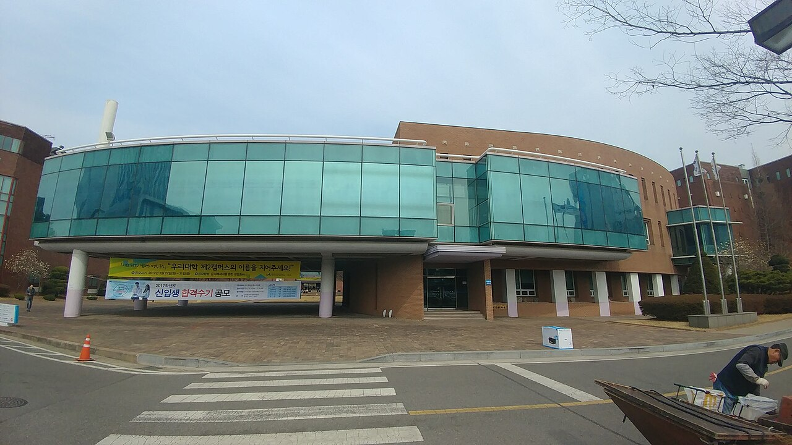
韩国工业大学（한국공학대학교）1998年由韩国知识经济部推动设立，原名韩国产业技术大学，2022年更为现名，主校区位于京畿道始兴市，是韩国产教融合型应用技术大学代表。学校以"实事求是"为建校理念，校园内入驻200余家企业研究所，与三星电子、大宇造船海洋等400…
又松大学是位于大田广域市的4年制私立大学，以外语与IT教育为特色，提供面向各专业领域的专门化课程。学校设七个学院，覆盖国际商科、AI大数据、铁道、软件融合、酒店餐饮烹饪等方向，与多所海外院校开展"2+2""3+1""3+1+1""4+1""1+1"等合作项目。…

清州大学1946年11月以"清州商科大学"之名获设立认可，1947年6月开校，1951年更名为清州大学，前身可追溯至1924年创立的大成学院，是韩国光复后政府新批准设立的第一所四年制大学。学校位于忠清北道清州市，为综合性私立大学，学科涵盖人文、社会科学、基础科…
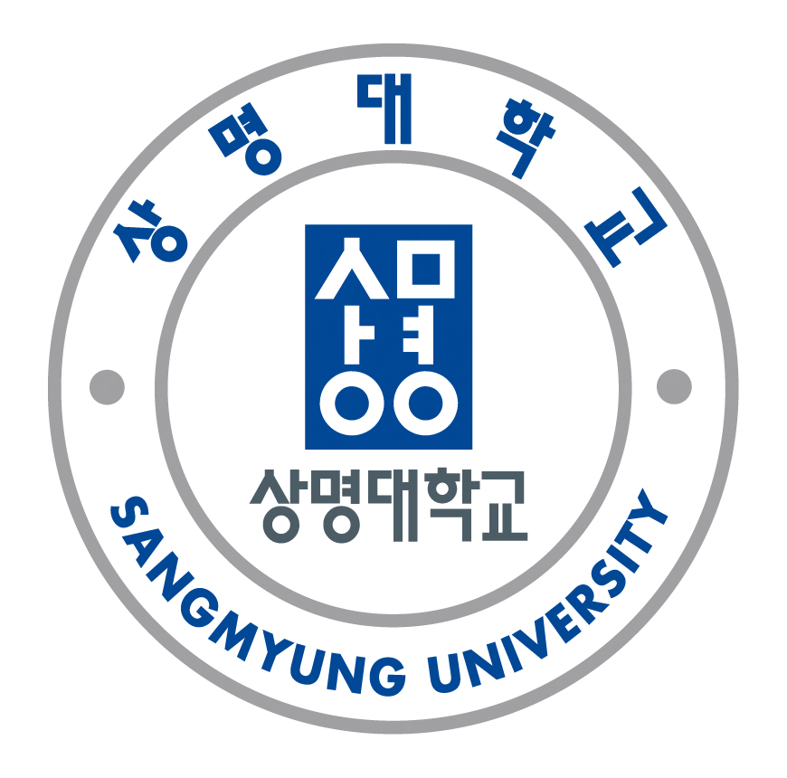
祥明大学1937年建校，主校区位于首尔钟路区，另设忠清南道天安校区，是韩国私立综合性大学。学校以设计、艺术、传统文化与教育学科见长，天安校区生活成本低，住宿费约1900元人民币/学期。近年面向中国学生开设中文翻译授课的专升本项目，主打国际金融经营方向，适合希望…

水原大学（수원대학교）建校于1982年（部分资料记为1977年），位于京畿道水原/华城地区，是韩国私立综合大学，设10个学院、9个学部、46个学科。学校以设计、经济、管理类学科见长，实行ESL英语教育，与中国及欧美多所院校开展合作。近年开设中文授课专升本（3+…
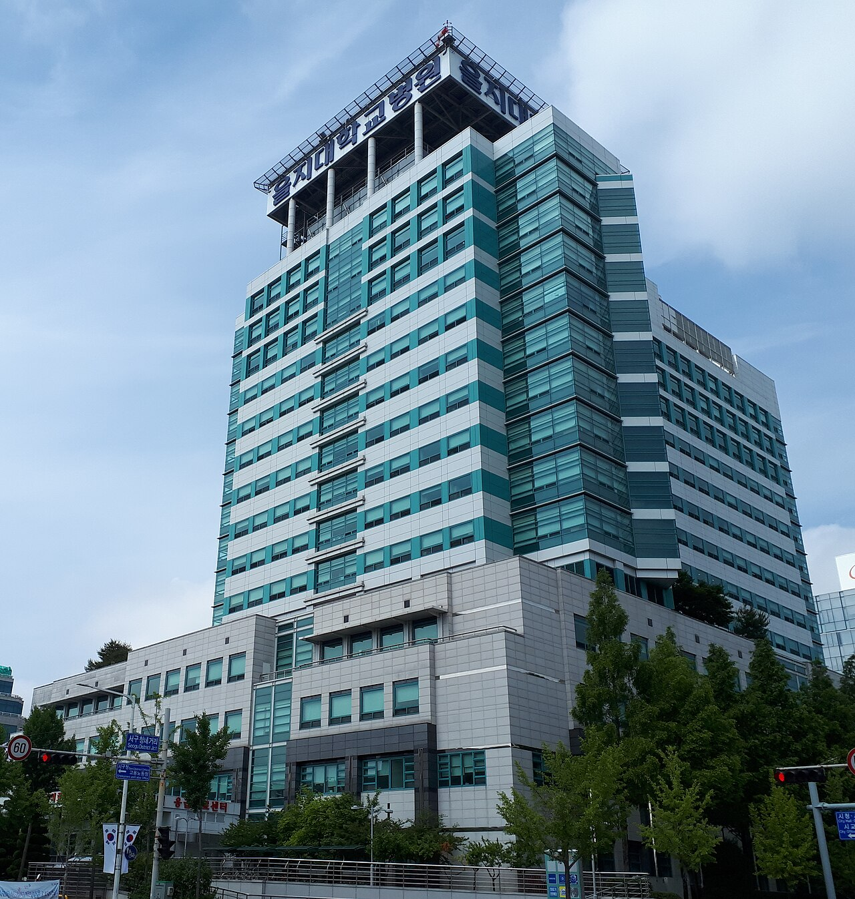
乙支大学1967年建校，以"关爱人类、尊重生命"为建学理念，设城南、议政府、大田三个校区，在校生5000余名，是韩国唯一的保健医疗特色大学，护士国家考试连续23年全员合格。学校在培养保健医疗人才方面成果丰硕，面向中国学生开设1年制中文授课硕士项目，涵盖人工智能…
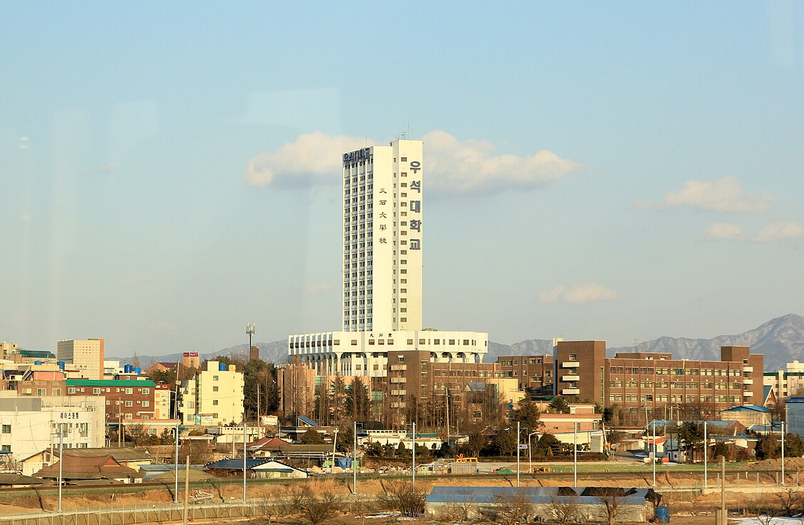
又石大学1979年建校，主校区位于全罗北道全州市，另设忠清北道镇川校区，是韩国教育部管理认证大学、大学创新支持事业"A等级"大学，也是中国教育部中外合作项目批准大学。学校以提供面向中国学生的双语授课专升本（3+1、2+2）和双语硕士项目为特色，入学无语言要求，…
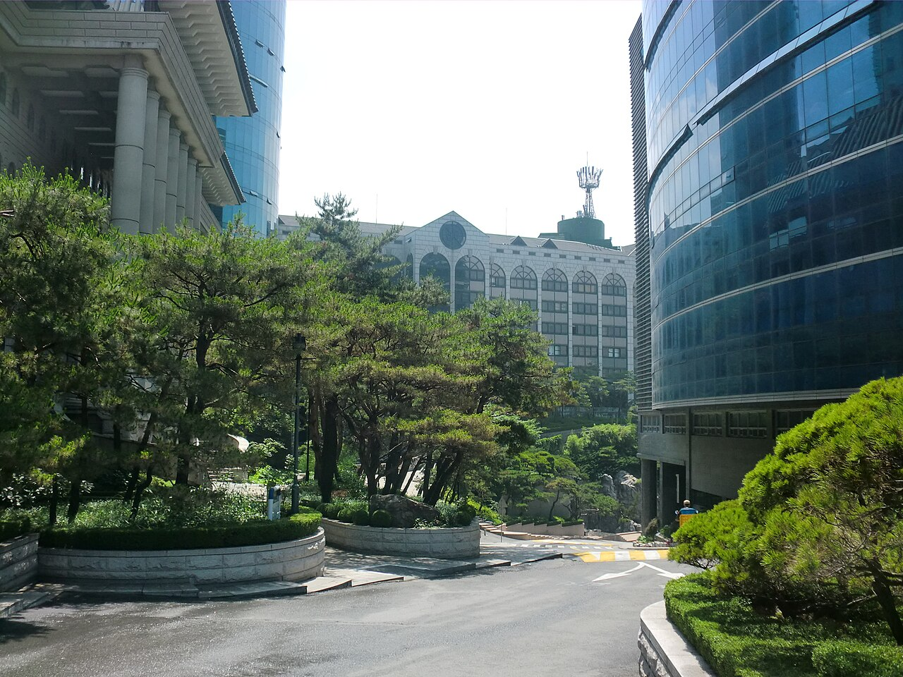
西京大学1947年建校，位于首尔特别市城北区，是韩国私立综合性大学。学校以美容艺术专业最为知名，是韩国最早开设美容艺术本科的院校，在设计、影视、表演艺术等艺术门类亦有较强实力。本次合作范围按原清单限定为本科层次。美容专业本科新生申请需TOPIK2级以上或参加校…

灵山大学是韩国东南部私立大学，主校区位于庆尚南道梁山市，另设釜山海云台校区及首尔辅助学习中心。学校开设本科与研究生教育，本科专业覆盖国际studies、法学、亚洲商务、信息工程等实用领域，研究生院开设法务、酒店旅游管理、信息技术、房地产、英语教育等方向。学校以…
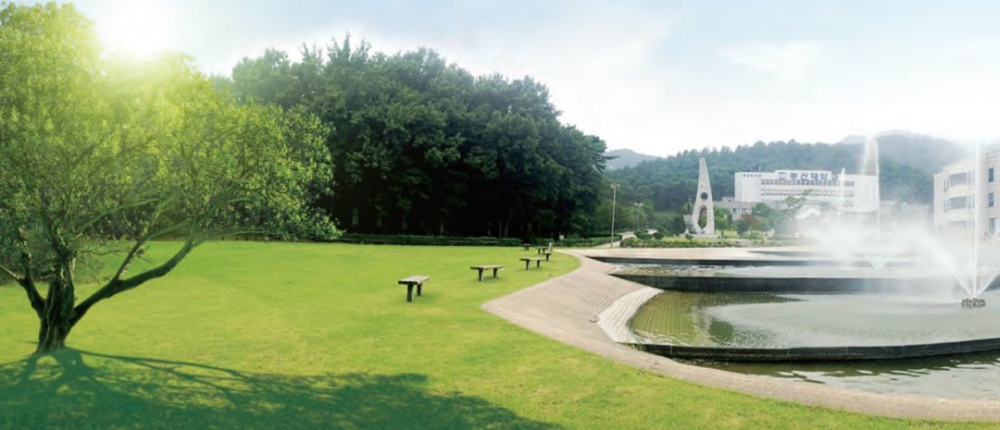
东新大学1987年建校，位于全罗南道罗州市，致力于培养能源、人工智能、健康医疗、文化、旅游等未来产业领域人才。学校获韩国教育部教育国际化力量认证，开设外国留学生学位课程及韩国语研修课程，近年入选大学人工智能基础教育课程开发支持、蓝色阶梯、大学就业Plus、LI…

光州大学创办于1980年，位于光州广域市南区，是韩国私立综合大学，初名光州经商大学。学校由金仁坤博士（号湖心）投入个人财产创办，建校精神承袭韩国早期私立学校"教育救国"宗旨。现设三所研究生院、四个学院，在校生超过15000人。光州是韩国西南部广域市，有"文化艺…
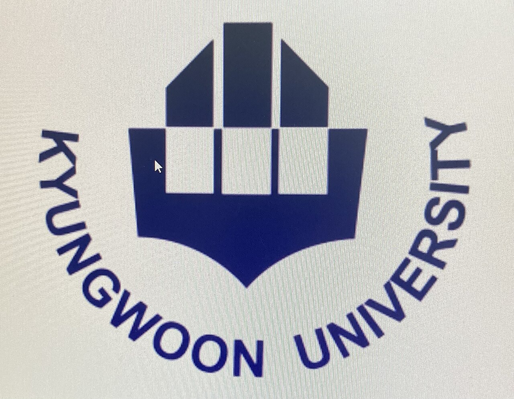
庆云大学1997年建校，2012年升格为综合性大学，是韩国私立四年制高校，设庆尚北道龟尾主校区与大邱校区，占地40余万平方米。学校下设航空工科、航空服务、医疗保健、社会安全等学院，以护理保健、航空工科、口腔医学为特色，护理学全球排名第51位，被韩国教育部评为"…
语言、学费与申请材料因校而异，以下为一般性参考，具体以各校当年招生简章为准。
| 项目 | 参考说明 |
|---|---|
| 办学性质 | 韩国院校分为国立/公立大学、私立大学两类；部分私立大学由教会创办，具基督教、天主教或佛教背景 |
| 授课语言 | 韩语授课为主；多所院校开设中文授课或中韩双语授课本硕博项目，部分项目入学无 TOPIK 要求 |
| 学费参考 | 国立大学通常低于私立大学；中文/双语授课项目按专业与层次差异较大，以校方简章为准 |
| 申请层次 | 本科（含专升本插班）、硕士、博士；部分院校仅开设特定层次，以清单与简章为准 |
| 申请材料 | 学历学位证明、成绩单、护照、语言证明、研究计划（硕博）等，以校方要求为准 |